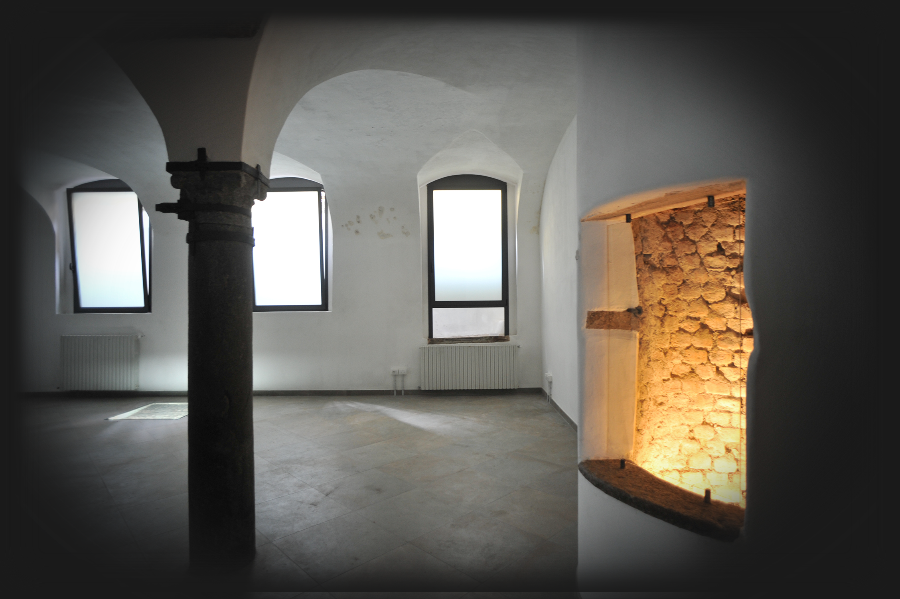
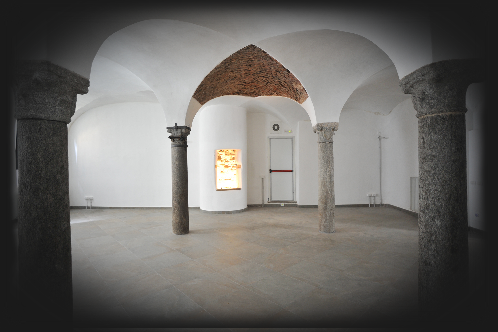
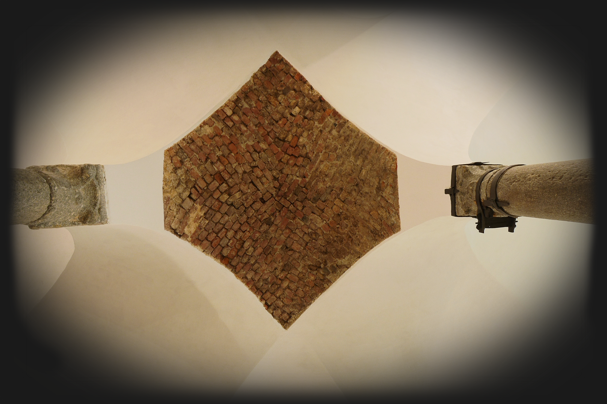
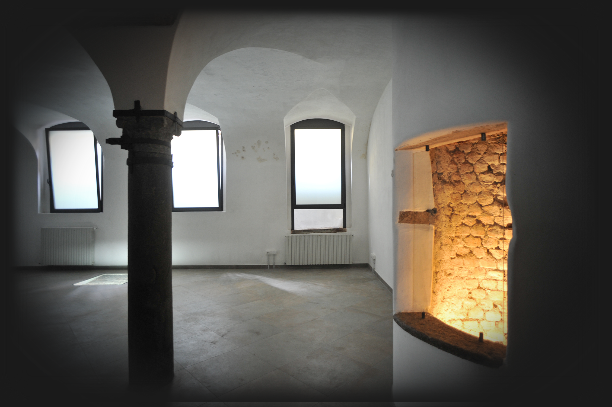
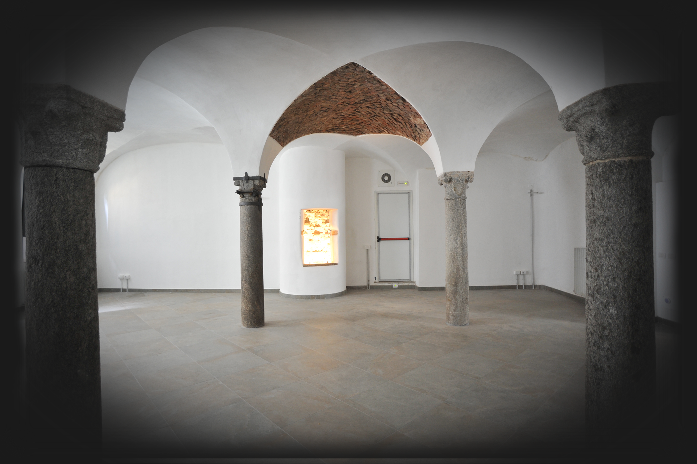
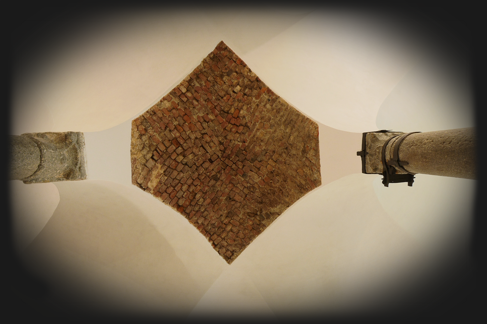

HOME
Benvenuti nella Casa dello Zecchiere, location situata nel cuore di Milano,
dove il fascino della storia incontra la modernità
A disposizione per tutte le tipologie di eventi.
Contattaci per un
preventivo e visionare i nostri spazi!
info@casadellozecchiere.it
 





DOVE
La Casa dello Zecchiere si trova in via del bollo 3, nel cuore della vecchia Milano,
a due passi da Piazza Duomo.
Metro: linea gialla fermata Duomo/Missori – linea
rossa fermata Cordusio/Duomo
Tram: n° 1-3-12-14-16-27
SERVIZI
La location è dotata di:
- Locale reception
- Servizio igienico (accesso disabili)
- Uscita di sicurezza
- Allarme antincendio
- Ascensore per n° 3 persone
- Illuminazione regolabile (via "dimmer")
- Rete dati radiale
- Schermo/monitor LCD 50”
- Connessione WiFi
- Antenna TV


STORIA
Gli spazi di questa location fanno parte di edifici un tempo connessi alla Zecca di Milano
che batteva moneta sino dall’epoca sforzesca. Le strutture murarie sotterranee risalgono
alla seconda metà del XV secolo; particolari degli affreschi ritrovati nei locali superiori
permettono di datare l’edificio attorno al primo quarto del Cinquecento. L’immobile, di cui
parla anche il Vasari, apparteneva alla famiglia Scaccabarozzi, Luigi padre e Bernardo figlio,
che ricoprirono la carica di Zecchiere dal 1488 al 1562. La Zecca di Milano, demolita nel 1780,
era confinante con questi spazi. Nel tardo Settecento l’edificio è stato inglobato nelle strutture
edilizie che oggi lo circondano. Nel corso del 1800 e del 1900 l’uso che si fece di questi spazi
divenne meno nobile e vi trovarono posto laboratori, magazzini e cantine dove venne anche realizzata
una cisterna per l’acqua, rimossa con il restauro.
Nel 2012, con il benestare delle Soprintendenze, la proprietà ha deciso di restaurare questi
edifici e i lavori si sono conclusi nel 2015. Su progetto dell’arch. Massimo Hachen sono
state consolidate le volte quattrocentesche, eliminate tutte le superfetazioni costruite nel tempo,
recuperando l’uso delle sale sotterranee e in particolare quella delle quattro colonne. È stato poi
scavato un nuovo accesso al piano interrato, coperto da una struttura vetrata ad onda, con scala e
ascensore. Durante lo scavo sono stati rinvenuti vari cocci di ceramica e due pietre lavorate di
origine romana che sono visibili in loco.
CONTATTI
+39 02 89010476
+39 3358082257 / +39 3396137309
info@casadellozecchiere.it